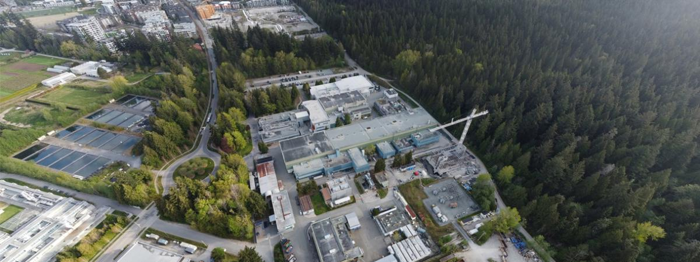
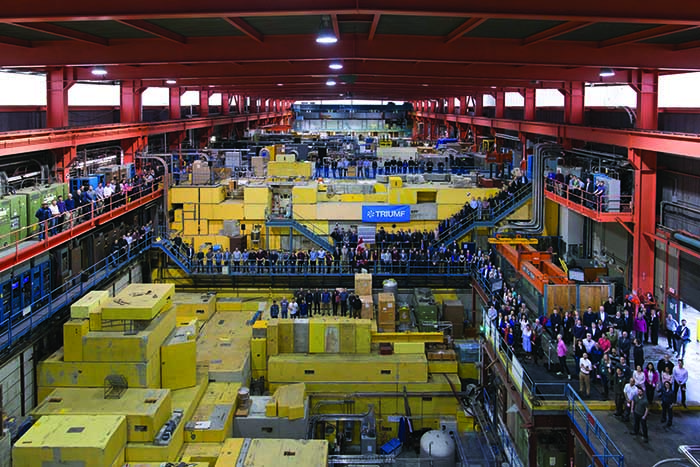

Info for TRIUMF Students
Last Updated: July 2025This page is about Canada's particle accelerator centre, TRIUMF, and you can find plenty of information about this facility below. Helpful information can be found here.

Aerial view of TRIUMF. Large rectangular building is the meson hall which houses the world's largest room temperature cyclotron! Credit: TRIUMF
UVic Association with TRIUMF
TRIUMF (which stands for TRI-University Meson Facility) was founded in 1968 by three universities: the University of British Columbia, Simon Fraser University, and the University of Victoria. It now joins 21 universities across Canada and is a global leader in subatomic research. Did you know that TRIUMF has a Guinness World Record? It earned the record for having the Largest normal conducting cyclotron, which measures 18 meters in diameter!

TRIUMF's meson hall. Credit: TRIUMF
Students with TRIUMF Supervisors
If you are supervised by someone at TRIUMF, you will most likely be moving to Vancouver at some point during your degree. For example, if you started your MSc in September and are in an experimental group, you will likely be TRIUMF-based from the following May onwards (after you've completed 8 months of classes). However, some students become TRIUMF-based after only 4 months of coursework! This is something that you and your supervisor will discuss and agree on. Something to keep in mind is that housing in Vancouver is notoriously difficult to secure. Be sure to start your search early and be weary of scams. General information on housing can be found here, although mostly dedicated to information about the Victoria, there are many helpful tips on the page to look at.
While at TRIUMF, you will likely have your own desk in the same area as the rest of your research group. You will be involved in group meetings, participating in experiments, and making improvements to the technology of your research group.
There are two types of students at TRIUMF: Graduate Student Research Assistants (GSRAs) and Graduate Student Visitors (GSVs). GSRAs are those which sign a contract with TRIUMF and consequently get their stipend through TRIUMF. GSVs are paid directly by the university. It is important to check which position you'll hold with your supervisor.
There are plenty of opportunities to get involved in the TRIUMF community, both in and out of your group. For example, their Graduate And Postdoc Society, GAPS, is a great way to connect with your peers. More information about GAPS can be found here. As TRIUMF is on UBC grounds, you are also able to get connected with UBC physics graduate students. Their PAGSA equivalent, PHAS, has a website which can be found here and a Facebook page with can be found here.
Site Access
Yay, you've got a place in Vancouver and you're ready to start your research! Not so fast...before you can go 'behind the fence' at TRIUMF (i.e. go anywhere beyond the main office building), you will need to complete some basic training and paperwork. Your supervisor will let you know what training is necessary for you during your stay and information about training offered at TRIUMF can be accessed by following this link. The TRIUMF safety orientation as well as the basic radiation protection training courses are required to go behind the fence. Both of these courses are available online through your TRIUMF Workday account which can be accessed here. You may also need to do the ARP (advanced radiation protection) course. This course has 3 components: lecture, in-person, and an exam. Be sure to ask your supervisor if this is necessary as the in-person portion of the course only runs thrice a year (January, May, and September).
Welcome to TRIUMF, we hope you have a great time with us!